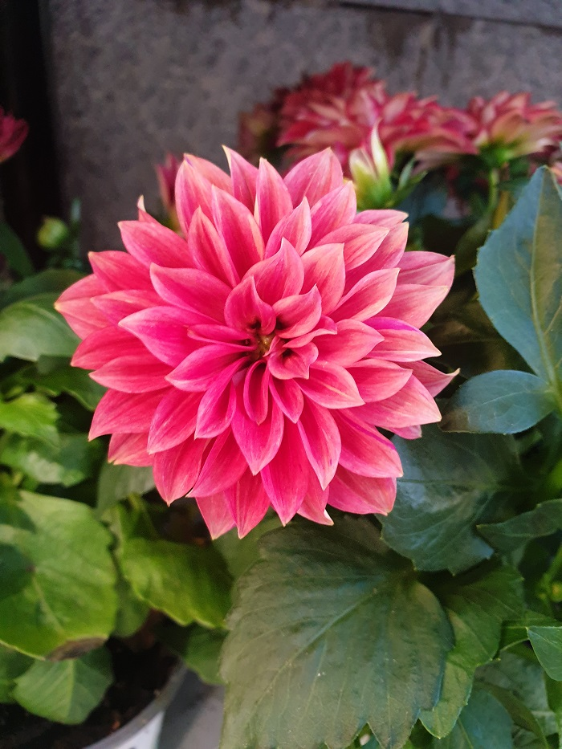
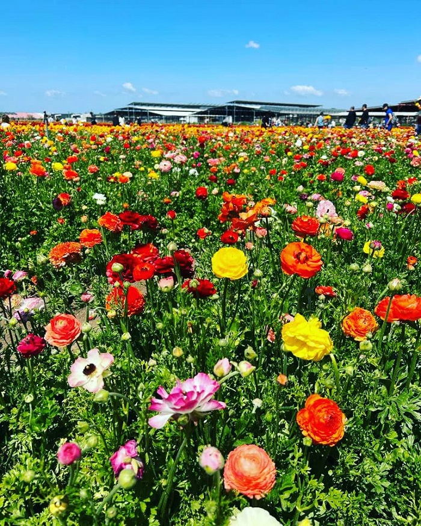

Contact me
Linkedin
About
professional experience
Technology certificates
Hi there! I'm Hen Medalya, 35 years old, living in Rishon LeZion, Israel.
My motto is:“Why fit in when you were born to STAND OUT!” - Dr Seuss
I'm passionate about enjoying the little things in life, and I believe that this is the path to true happiness.
One of my favorite hobbies is visiting wildflower fields. I especially love sunflowers - the flowers of the sun.
The bright yellow sunflowers follow the sun throughout the day, their heads always turned towards its light.
For me, sunflowers symbolize joy and optimism - two qualities that I deeply resonate with.
I like to take pictures to remember beautiful moments from life...
|  | |
|  |
I've always been fascinated by the world of computers and technology.
Over the past 7 years, I've grown into a skilled SEO (Search Engine Optimization) specialist,
This role has required me to delve into intricate details,
conduct thorough research, and consistently achieve ambitious goals.
I've also gained valuable leadership experience, spearheading and managing team to execute tasks
aligned with my carefully crafted project plans.
Throughout my SEO career, I've spearheaded numerous website migrations, acquired extensive knowledge in user experience (UX),
and drafted detailed specifications for developers.
Only once everything met my meticulous standards did I give the green light for site launches.
My passion lies in identifying and resolving issues, which led me to pursue a career in software testing (QA).
I'm eager to leverage my skills and dedication to excel in this field.
Click here to check my Linkedin
I am available for an interview at your earliest convenience. Thank you for your time and consideration. 😃
© All rights reserved to Hen Medalya 2024